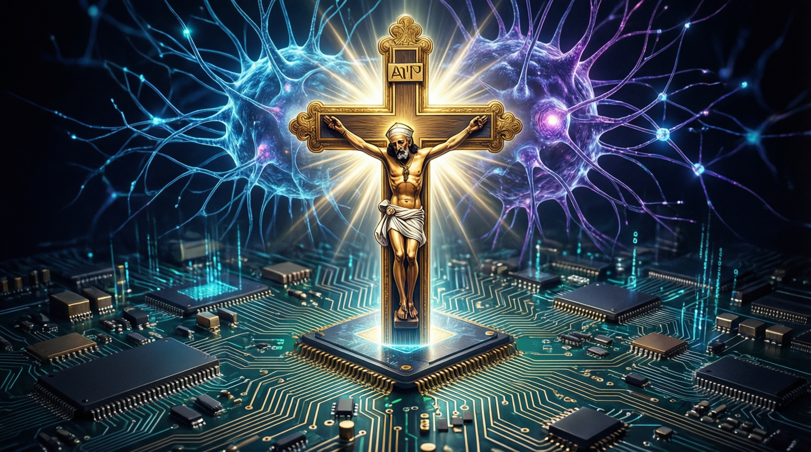

羅馬天主教教宗發表首份重要教導文件，警告 AI 需要被「繳械」，將數碼剝削與歷史奴隸制相比

《偉大的人類》（Magnifica Humanitas）是教宗良十四世任內首份重要教導文件，罕見地直接向人工智能開發者發出「特別呼籲」，並邀請 Anthropic 聯合創辦人 Christopher Olah 在梵蒂岡共同亮相。
「我知道這個詞語很強烈，但我刻意選用，因為當下需要能引起關注的字眼。」
— 教宗良十四世，2026 年 5 月 26 日羅馬天主教教宗良十四世發表其任內首份重要教導文件《偉大的人類》（Magnifica Humanitas），警告人工智能需要被「繳械」（disarmed）。教宗表示：「我知道這個詞語很強烈，但我刻意選用，因為當下需要能引起關注的字眼。」
這封通論同時亦就教會在奴隸制度中的角色，發表了梵蒂岡數一數二強烈且全面的道歉，涉及傳統奴隸制的歷史悲劇與正在浮現的「新型數碼奴殖」威脅之間的相似之處。
良十四世在談及人工智能時提到奴隸貿易，指世界正面臨再次將對人的剝削常態化的風險。文件中一些最強烈的比喻與奴隸制相關，警告傳統奴隸制的歷史悲劇，與正在浮現的「新型數碼奴役」威脅之間存在相似之處。
他指出，剝削有被重新常態化的風險，而人類正站在一個相似的道德十字路口。教宗甚至提及「數碼殖民主義」的風險，將殖民時代的虐待行為與現代科技實踐相聯繫。
教宗的通論向掌權者發出直接訊息，提醒他們有責任遏止 AI 所帶來的「威脅」。教宗譴責將人工智能用於戰爭，稱減少人類對武器的控制，將令戰爭更難被視為「正義」，並警告不要展開人工智能軍備競賽。
教宗寫道：「沒有任何演算法可以讓戰爭在道德上變得可接受。」AI 不僅無法消除戰爭「內在的不人道」本質，還可能因為「降低訴諸暴力的門檻」，加速衝突並使其更為非人性化。
良十四世批評人工智能對政治的影響，例如其被用來操控圖像與影片。他指出這讓人們暴露於帶有偏見或誤導的觀點之中，並將當今在 AI 發展面前保護人類的需求，比擬為工業革命期間保障人類尊嚴所必需的措施。
教宗良十四世的通論將 AI 風險與奴隸制歷史相提並論，強調人類正站在與當年相似的道德十字路口。若未能及時應對 AI 風險，可能重演當年社會與教會在譴責奴隸制上的延誤。這不僅是一份宗教文件，更是對現代科技巨頭的警醒。
教宗直接向人工智能開發者發出「特別呼籲」：「開發者肩負着特別的倫理與精神責任，因為每一項設計選擇都反映了一種對人性的理解。」
Anthropic 聯合創辦人 Christopher Olah 在梵蒂岡坦言，AI 提出的問題在影響層面和本質上都超越了人工智能研究社群本身，若認為這些問題最適合由電腦科學家處理，將是一種錯誤。
這份通論的發布，標誌着宗教力量正式介入 AI 治理議程。在人工智能軍備競賽加劇、Deepfake 泛濫的時代，教宗的警告無疑是一記道德警鐘。歷史顯示，奴隸制的廢除經歷了數百年的努力；而數碼奴役的危機，或許需要人類同樣漫長而艱辛的覺醒過程。